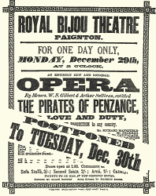
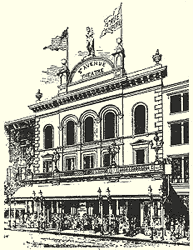
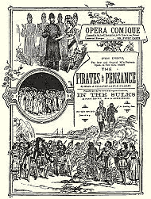

You are here: > > Introduction
The Pirates of Penzance had three premières: a performance to establish the British Copyright by one of D'Oyly Carte's Pinafore Touring Companies at the Royal Bijou Theatre, Paignton, Devon, on 30 December 1879; the New York première at the Fifth Avenue Theatre on 31 December 1879 and the London première at the Opéra Comique on 3 April 1880.
In early performances, the Pirate King was given the name Richard and the Sergeant of Police was called Edward. In addition, James, a pirate, appeared in the Paignton performance.
Paignton Cast
 |
Major-General Stanley | Richard Mansfield |
| The Pirate King | F. Federici | |
| Frederick | Llewellyn Cadwaladr | |
| Samuel | G. J. Lackner | |
| James | John Le Hay | |
| Sergeant of Police | Fred Billington | |
| Mabel | Emilie Petrelli | |
| Edith | Marian May | |
| Isabel | Kate Neville | |
| Kate | Lena Monmouth | |
| Ruth | Fanny Harrison |

New York Cast
| Major-General Stanley | J. H. Ryley |  |
| The Pirate King | Mr Brocolini | |
| Frederic | Hugh Talbot | |
| Samuel | Furneaux Cook | |
| Sergeant of Police | F. Clifton | |
| Mabel | Blanche Roosevelt | |
| Edith | Rosina Brandram | |
| Isabel | Jessie Bond | |
| Kate | Billie Barlow | |
| Ruth | Alice Barnett |

London Cast
 |
Major-General Stanley | George Grossmith |
| The Pirate King | Richard Temple | |
| Frederic | George Power | |
| Samuel | George Temple | |
| Sergeant of Police | Rutland Barrington | |
| Mabel | Marion Hood | |
| Edith | Julia Gwynne | |
| Isabel | Lilian La Rue | |
| Kate | Neva Bond | |
| Ruth | Emily Cross |

|
Page Created 20 August, 2011